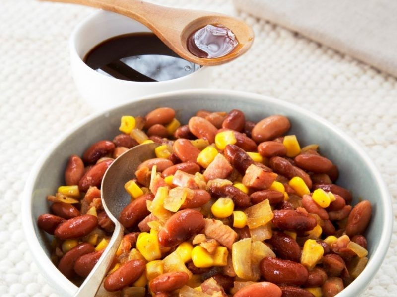
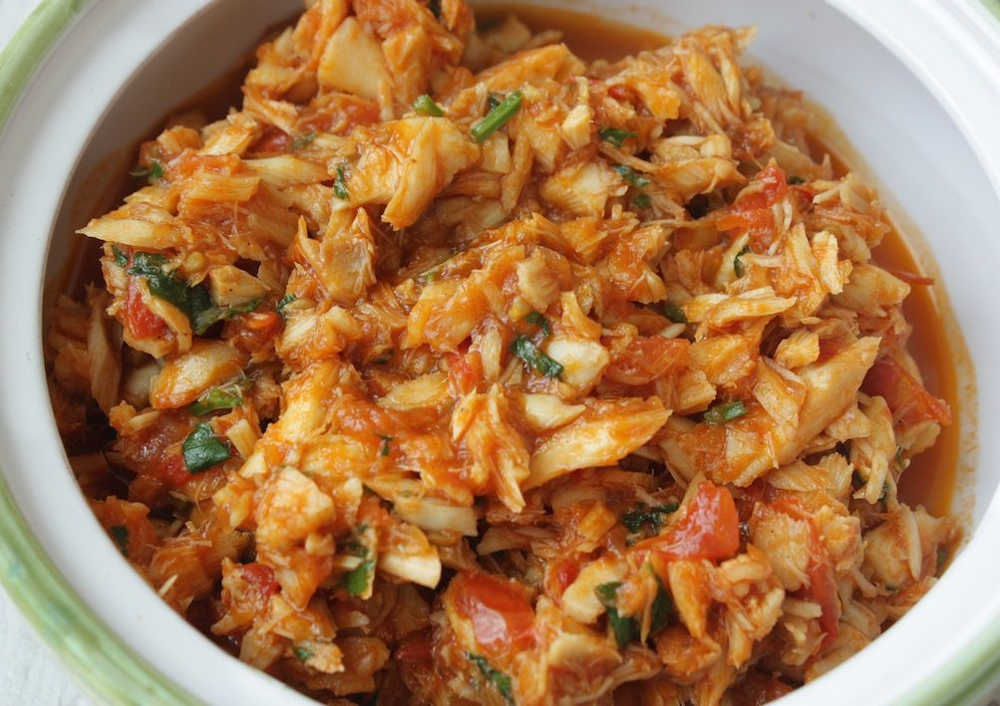
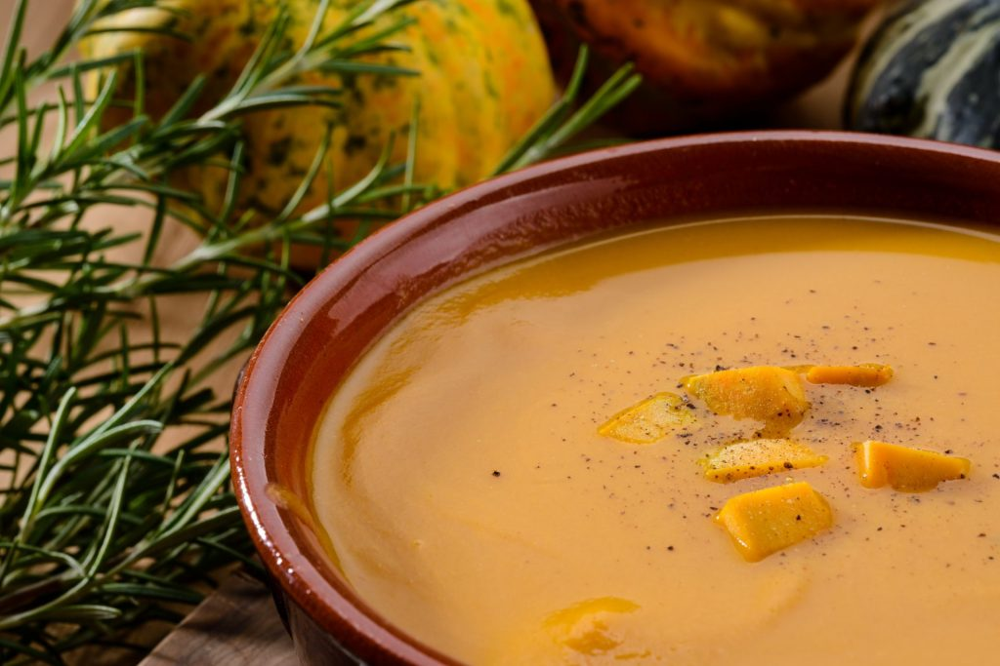
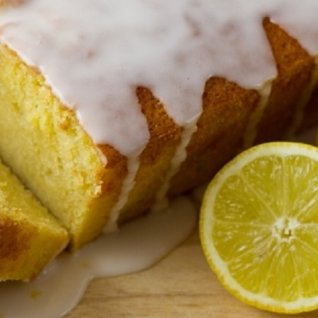
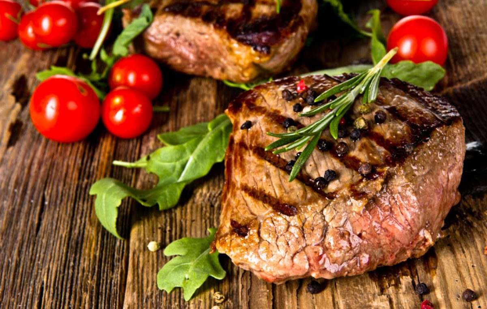
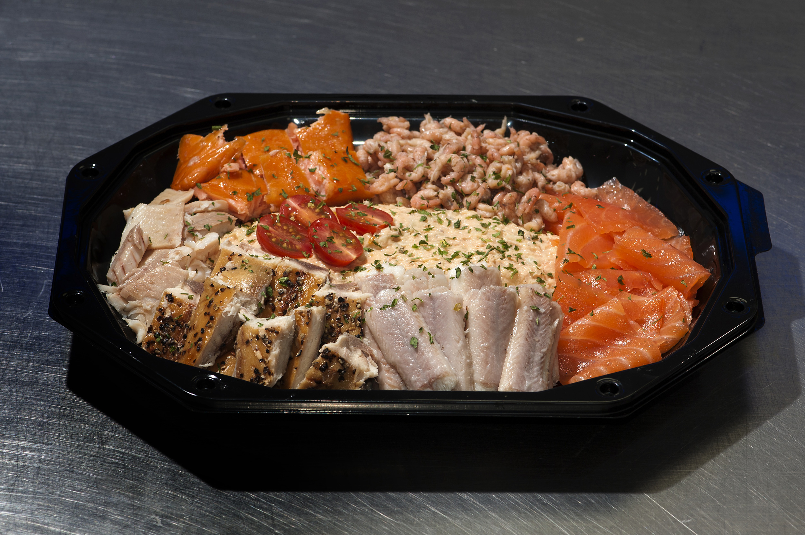
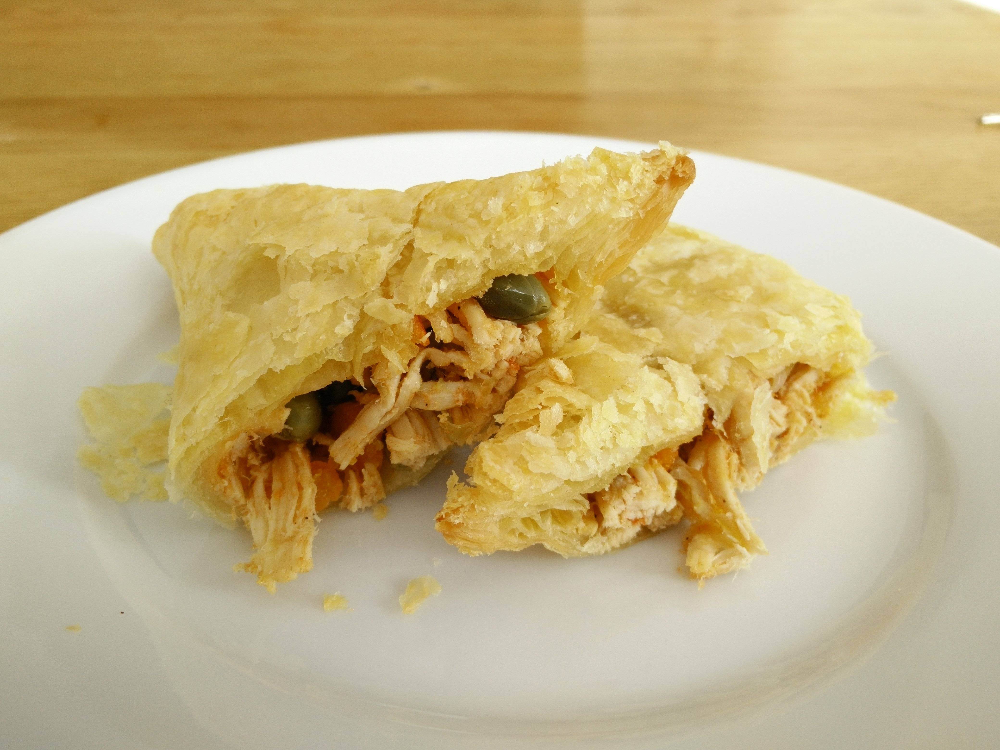

Bruine Bonen
Bereiding Bruine Bonen De kip wassen en in stukken snijden. Met zout en zwarte peper bestrooien. Het |
Bakkeljauw
Bereiding Bakkeljauw De bakkeljauw ontzouten en in kleine stukken verdelen. |
Pompoensoep
Bereiding Pompoensoep Het soepvlees wassen. |
Citroencake
Bereiding Citroencake De boter romig roeren met de suiker. |
Biefstuk
Bereiding Biefstuk De biefstuk in de boter bakken, als deze al wat bruin is, uit de pan halen en in smalle |
Visschotel
Bereiding Visschotel De vis schoonmaken en wassen. |
Zalmpastei
Voor de vulling: Bereiding Zalmpastei Een deeg kneden van de bloem, roomboter en water. Goed kneden. |